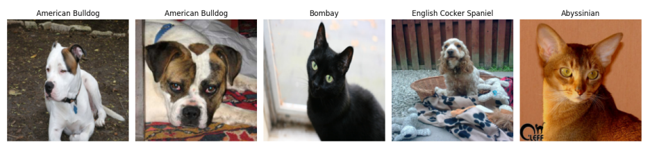
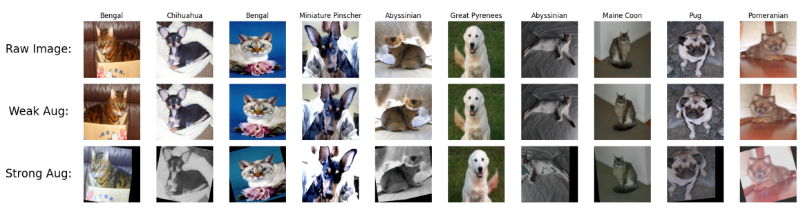

This project investigates transfer learning and semi-supervised learning for image classification using the Oxford-IIIT Pet Dataset. Made for a course at KTH DD2424 Deep Learning in Data Science.
This project started as an attempt to understand how much we can rely on pre-trained models, and whether semi-supervised learning can meaningfully reduce the need for labeled data without destroying performance.
My team and I worked with the Oxford-IIIT Pet Dataset, which contains 37 different cat and dog breeds. While it may sound simple at first, the dataset is surprisingly challenging — many breeds look extremely similar, while images within the same class can vary significantly.

Sample images from the Oxford-IIIT Pet Dataset illustrating fine-grained differences.
All experiments were based on a ResNet50 convolutional neural network pre-trained on ImageNet. We began with a simple binary classification task (cat vs. dog), using feature extraction by freezing all convolutional layers and training only the final classification head.
From there, we extended the model to predict all 37 pet breeds and explored different fine-tuning strategies, including training multiple layers simultaneously and gradual un-freezing, where layers are incrementally unfrozen during training to reduce overfitting.
To push the project further, we implemented the FixMatch semi-supervised learning algorithm, introduced by Sogn et. la (2020). FixMatch combines pseudo-labeling with consistency regularization, using weak and strong data augmentations to learn effectively from unlabeled data.
The idea is simple but powerful: if the model is confident about a prediction on a weakly augmented image, it should make the same prediction for a strongly augmented version of that image.

Weak vs. strong augmentations used by the FixMatch algorithm.
Overall, the experiments demonstrate that transfer learning with a pre-trained ResNet50 model is highly effective for both binary and fine-grained image classification on the Oxford-IIIT Pet Dataset.
| Images per Class | Labeled Data (%) | Supervised Only | FixMatch |
|---|---|---|---|
| 50 | 60% | 89.48% | 90.35% |
| 20 | 25% | 88.42% | 87.64% |
| 10 | 12.5% | 70.24% | 86.41% |
| 2 | 2.5% | 11.99% | 72.91% |
| 1 | 1% | 5.56% | 50.15% |
Test accuracy comparison between supervised learning and FixMatch under varying amounts of labeled data.
These results highlight the importance of both transfer learning and training strategy: while pre-trained models provide a strong foundation, careful fine-tuning and semi-supervised techniques are critical when labeled data is scarce.
On a personal level, this project helped me better understand how neural networks behave during training. It gave me hands on expirience, which I plan to use in my future projects.